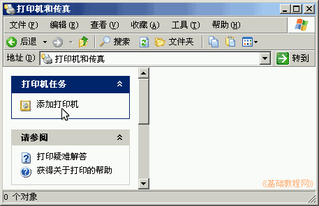
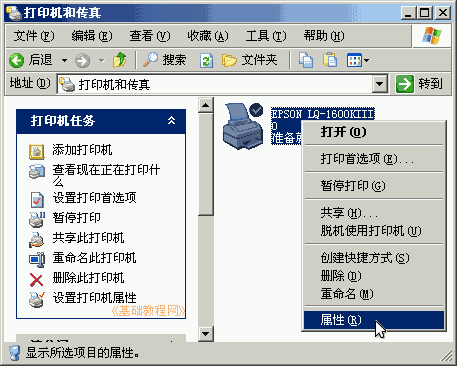
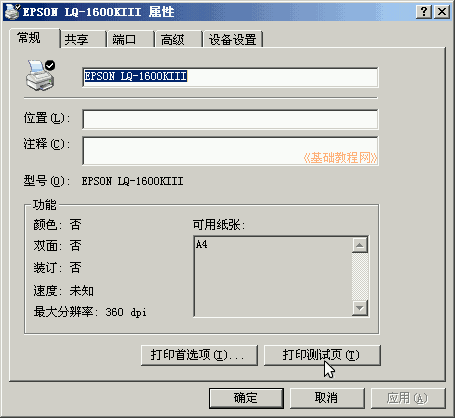

控制面板基础教程
作者：TeliuTe 来源：基础教程网
这一项可以添加打印机，或者设定默认打印机，下面我们来看一个练习；
1、打印机和传真
1）进入经典视图，点“打印机和传真”图标出来一个窗口；
2）点窗口左边栏的“添加打印机”，会出来一个安装向导，
不过，打印机一般附带有安装盘，运行里面的安装程序；

2、设置打印机
1）在右边的窗口里，在打印机上点右键-属性，可以设置安装好的打印机，
双击左键可以查看正在打印的任务；

2）在属性面板里，可以查看各个选项，点“打印测试页”，可以测试打印机；

3）在打印机里放一张A4的纸，点“打印测试页”，可以输出打印机相关的信息；
打印的时候，在任务栏托盘里，会出来一个打印图标，双击可以查看打印信息，取消或暂停打印任务；
本节学习了设置打印机的基础知识，如果你成功地完成了练习，请继续学习下一课内容；
本教程由86团学校TeliuTe制作|著作权所有
基础教程网：http://teliute.org/
美丽的校园……
转载和引用本站内容，请保留版权信息和本站链接。